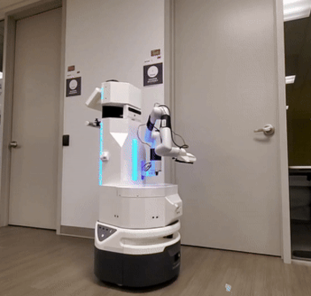
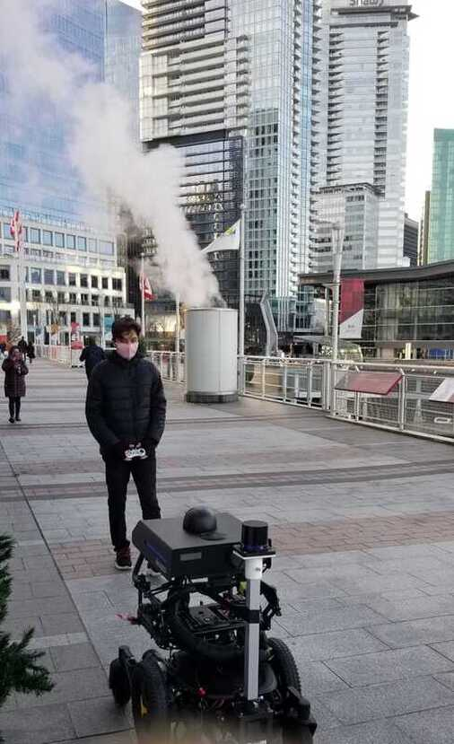
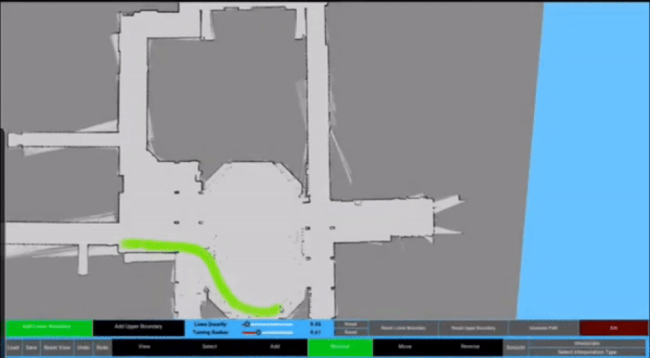

ENGINEERING PORTFOLIO / WORK PROJECTS
Robotics & Autonomy
Robot motion, manipulation, and localization in real environments.
Robotics & Autonomy
4 WORK PROJECTS
01 / WORK PROJECT
Robotic surface disinfection
Arm-control software for a mobile UV disinfection system developed during the pandemic.
View project ↗
02 / WORK PROJECT
Outdoor robot localization
Localization improvements and repeatable offline analysis for field testing.
View project ↗03 / WORK PROJECT
Indoor navigation & parking
Motion planning and automatic parking for a differentially driven airport robot.
View project ↗
04 / WORK PROJECT
Automated cleaning paths
Python tools that streamline route creation for path-following cleaning robots.
View project ↗